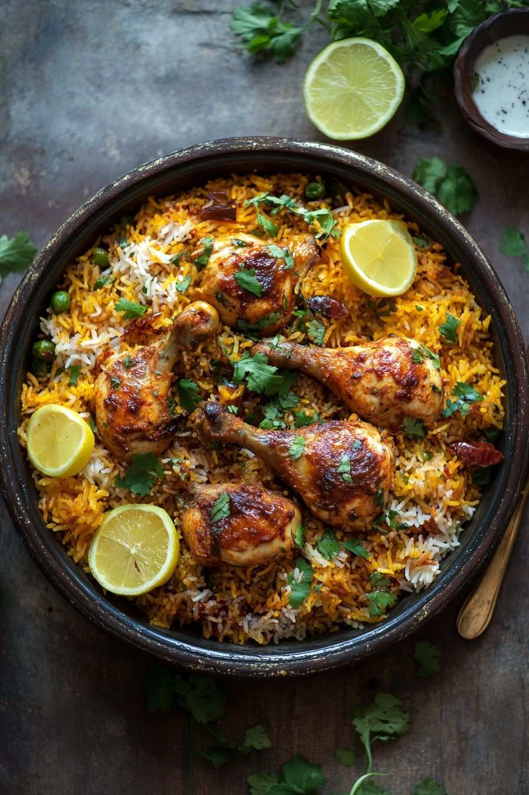
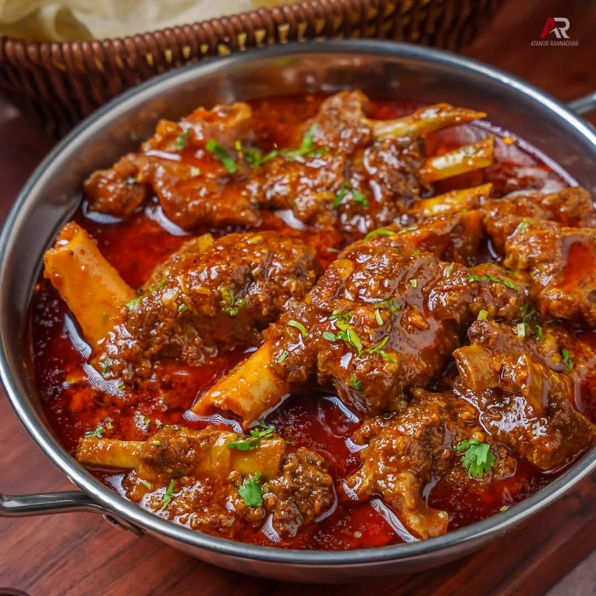
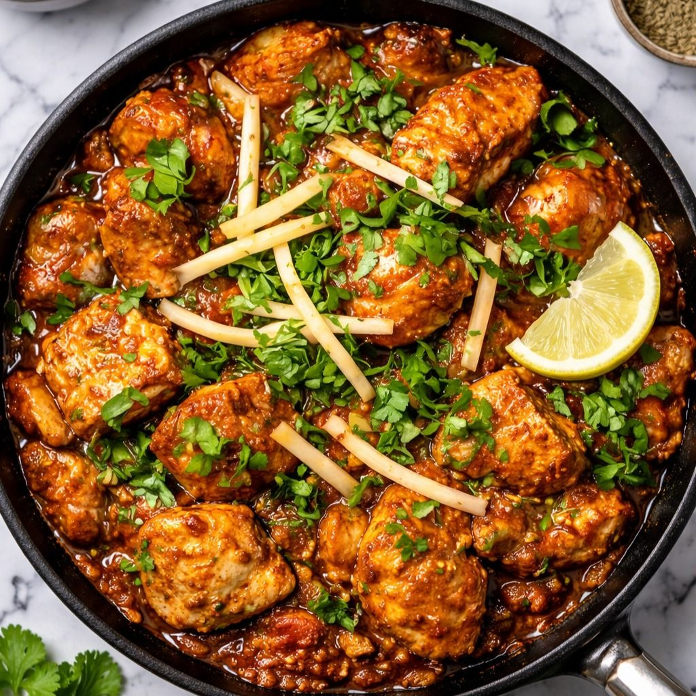
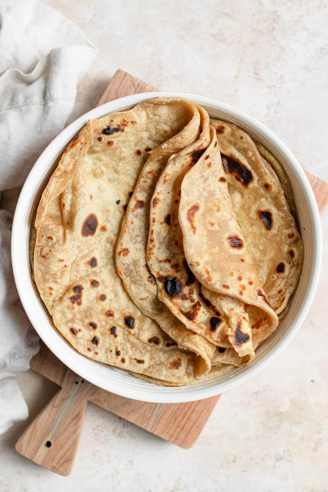
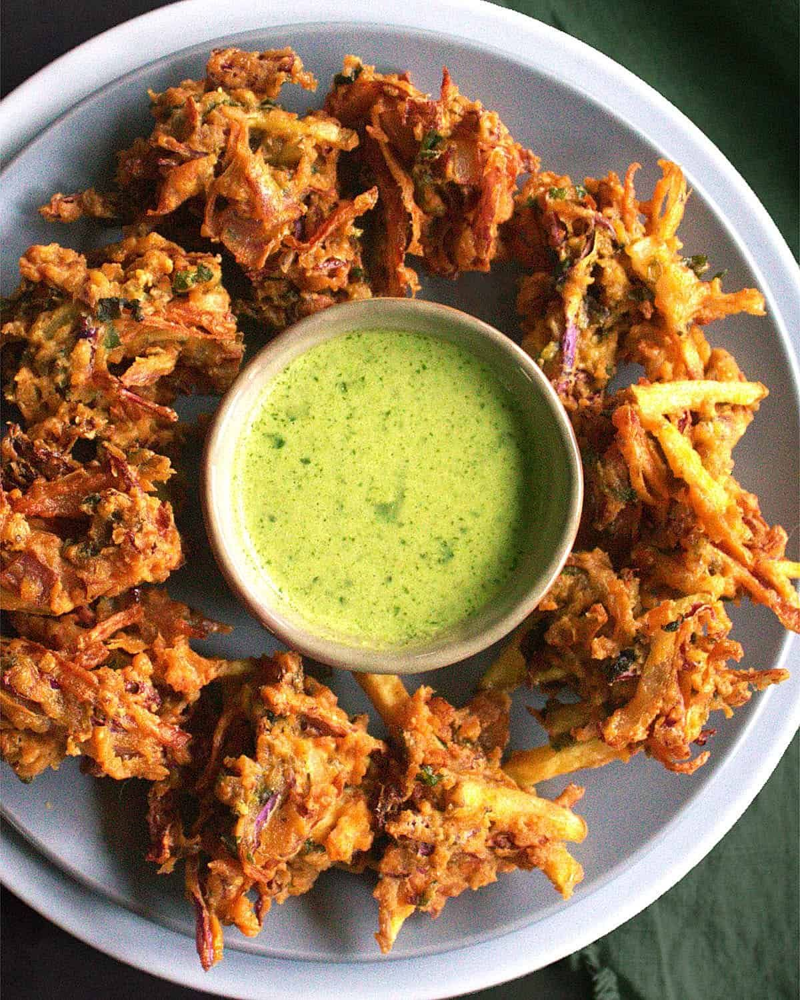
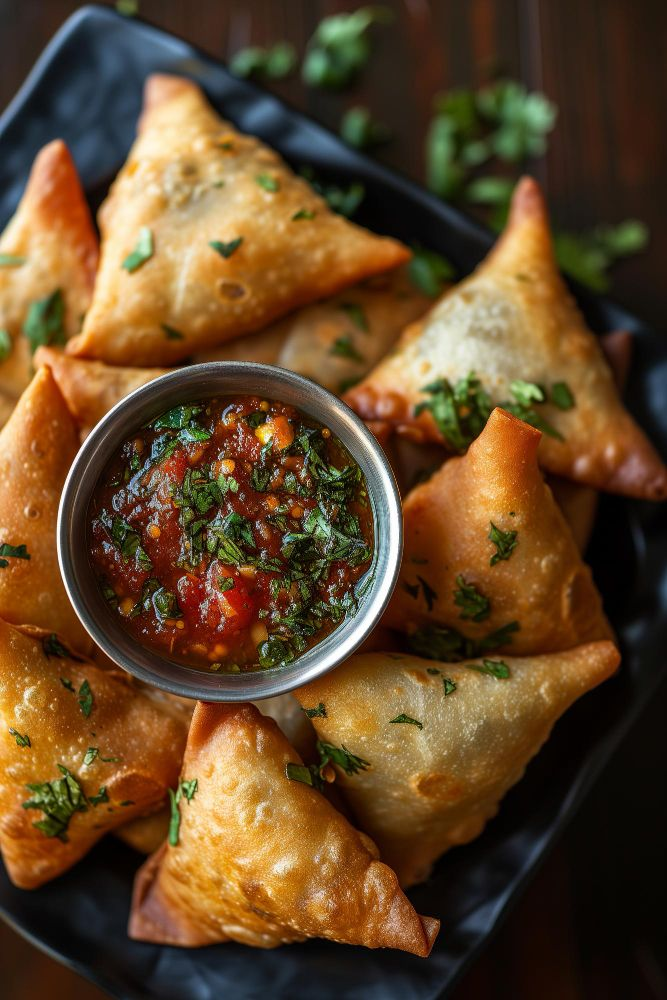
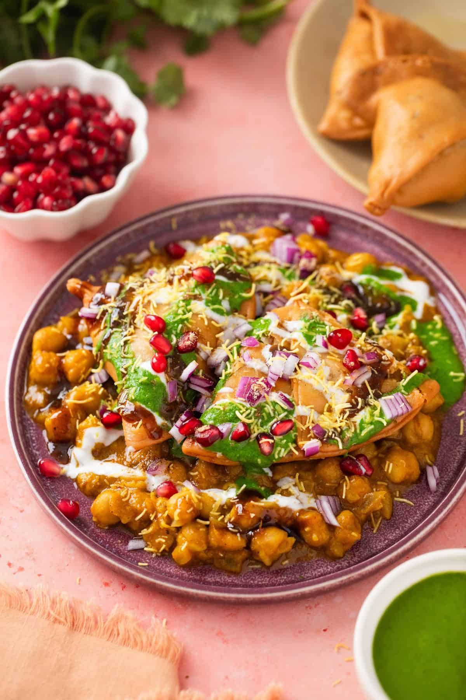
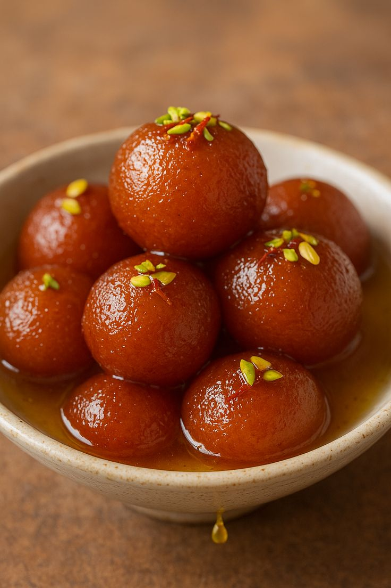
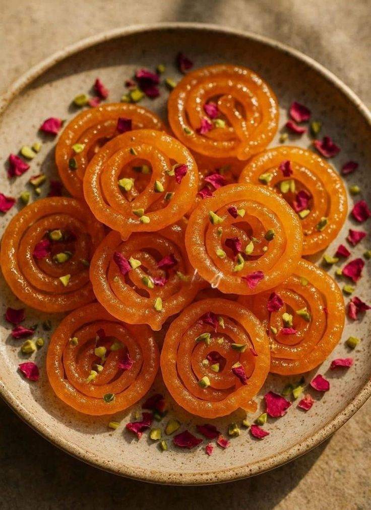

Discover Pakistan's famous foods
Pakistani cuisine is diverse, rich, and full of flavor, reflecting the country’s varied geography, history, and culture. It is known for its bold spices, aromatic herbs, and hearty dishes that range from street food to royal feasts. Each region has its own specialties, giving the cuisine a wide variety of tastes and styles.

Biryani is a popular and flavorful dish made with rice, meat (like chicken, beef, lamb, or goat), fish, or vegetables, and a blend of aromatic spices such as cumin, cardamom, cloves, and saffron. It is widely eaten in Pakistan, India, and other South Asian countries, and has many regional variations.

Nihari is a rich, slow-cooked stew originating from India and popular in Pakistan. It is usually made with beef or lamb (sometimes chicken), simmered for several hours with aromatic spices to create a deep, flavorful gravy.

Karahi is a popular and flavorful dish in Pakistan and India, named after the karahi, a deep, circular, and thick cooking pan similar to a wok. It’s usually made with chicken, beef, mutton, or vegetables, cooked quickly over high heat with spices, tomatoes, and green chilies.

Roti is a simple, thin, unleavened flatbread that is a staple in Pakistan, India, and other South Asian countries. It’s made with whole wheat flour (atta), water, and sometimes a pinch of salt, then cooked on a flat griddle (tawa).

Pakoras are crispy, deep-fried fritters popular in Pakistan and India, usually made by coating vegetables, meat, or paneer in a spiced chickpea flour (gram flour) batter. They are a common snack, appetizer, or street food, especially during rainy weather or festive occasions.

Samosa is a triangular, deep-fried pastry popular in Pakistan, India, and many other South Asian countries. It’s usually stuffed with spiced potatoes, peas, lentils, or meat and is a common snack, street food, or appetizer.

Chaat is a savory, tangy, and spicy snack popular in India and Pakistan. It’s usually made by mixing fried dough or crispy snacks with vegetables, chickpeas, yogurt, chutneys, and spices, creating a burst of flavors in every bite.

Gulab Jamun is a sweet, syrup-soaked dessert popular in Pakistan, India, and other South Asian countries. Its name comes from “Gulab” (rose) referring to the rose-flavored syrup, and “Jamun”, a small round fruit, describing its shape.

Jalebi is a crispy, spiral-shaped dessert popular in Pakistan, India, and other South Asian countries. It is deep-fried and soaked in sugar syrup, giving it a sweet, sticky texture and bright orange color.